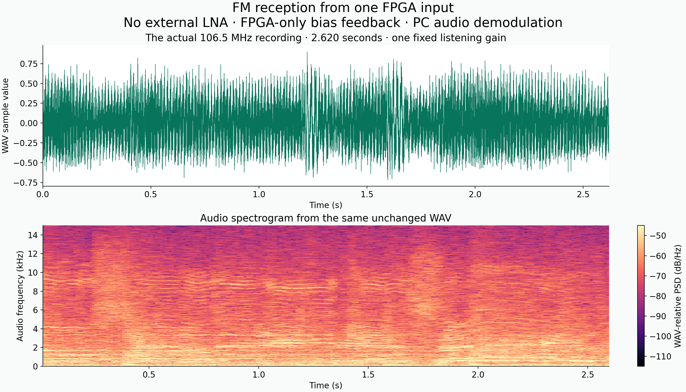
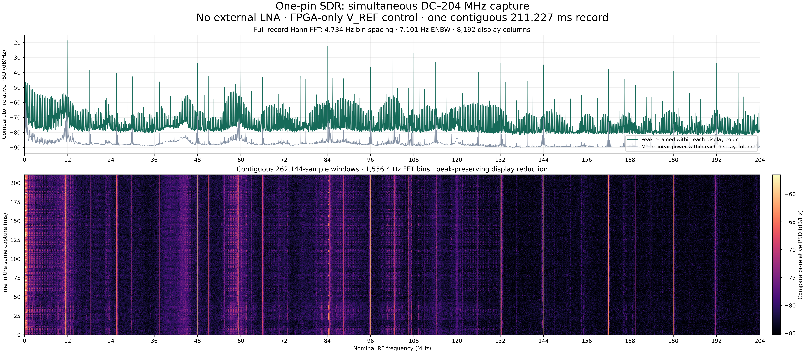
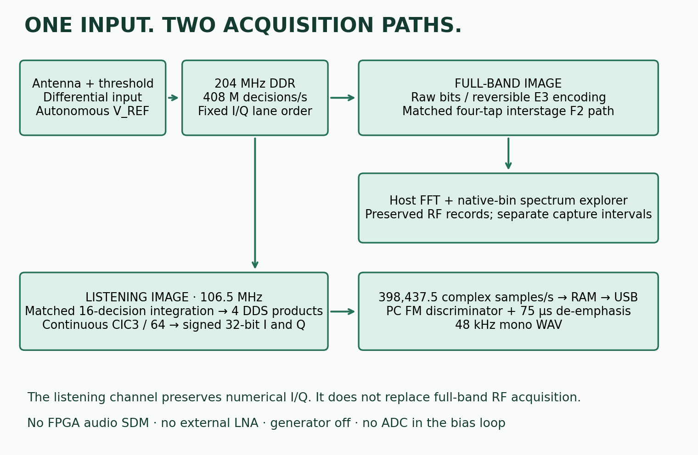
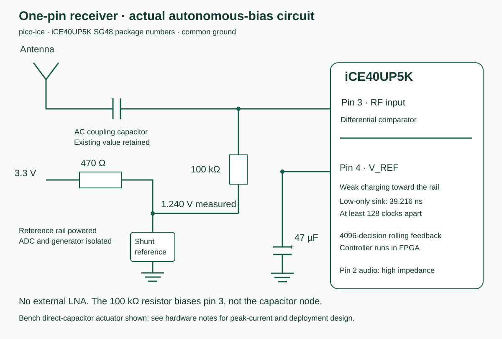

Next result: Wi-Fi through one FPGA input. The same wideband FPGA image now supplies a complete 129-byte beacon after frequency conversion, with no external LNA. Inspect the received bytes and the open-source host decoder.
Listen to the receiver
This is the exact clip I listened to: beautiful, extremely high sound quality. The antenna goes directly through a coupling capacitor to the FPGA’s differential input. There is no external LNA. The signal generator is off. The FPGA maintains the input bias itself.
106.5 MHz · 2.620 seconds · actual received audio
Download the unchanged WAV · 503,034 bytes · 48 kHz mono float32
The PC recovered this sound from 1,048,550 signed I/Q pairs captured over one continuous 2.632-second interval. The file uses one constant listening gain. It contains no repeated passages or filled-in samples. The package includes the received I/Q and the command that regenerates this very WAV, byte for byte.

The whole DC–204 MHz span, captured at once
The antenna signal supplies one continuous stream of threshold decisions. This full-band recording retains 86,180,752 actual decisions over 211.227 ms: the entire nominal DC–204 MHz first Nyquist zone at once, with no frequency sweep and no selected-channel decimation. FM listening is one application of that stream.
There was no external LNA in this capture. The FPGA’s internal feedback controller regulated the capacitor on the second differential input, using its 75% target profile. The ADC bus was isolated, the generator was off, and neither ADC nor PC feedback ran the loop.

Download the full-resolution spectrum and waterfall · Download the unchanged full-band capture · Capture and controller details
{kind=link}
Every reconstructed RF word passes the original hardware input CRC: 15,687. The source package includes the lossless decoder and plotting command. Levels are expressed relative to comparator decisions; the trace preserves strong lines, broad structure and spurs together. Identifying individual emissions is a separate demodulation task, and the full-band acquisition remains available for it.
From a one-pin FM receiver to an inspectable SDR
My original one-pin FM receiver put the oscillator and quadrature processing inside the FPGA. A differential input supplied threshold decisions; digital mixing and integration recovered the program. Its final sigma-delta output drove analog audio.
This version opens the numerical signal path to the PC. The analog audio pin stays high impedance. The FPGA exports the actual I/Q words before audio conversion, while a separate full-band image retains the RF decisions themselves. Audio demodulation, Fourier analysis and display run on the host.
The new piece at the physical boundary is equally useful: the same FPGA that observes the input now controls its operating point. A 47 µF capacitor holds V_REF. The controller counts comparator decisions and makes short, low-only corrections. The ESP8266 was a measurement instrument during development; it does not run this feedback loop.

The circuit is small enough to follow completely

The RF-bearing input is package pin 3, AC-coupled to the antenna and biased through 100 kΩ from the measured 1.240 V reference. The other differential input, pin 4, carries the 47 µF capacitor. These are separate bias nodes: the 100 kΩ resistor does not connect the two inputs together.
The reference is supplied from the existing 3.3 V rail through 470 Ω. The nominal resistor current is (3.3 − 1.24) / 470 = 4.38 mA. The exact reference part and antenna coupling-capacitor value were not recorded; the hardware guide records the measured reference voltage and connections.
During reception the ADC bus and generator are isolated from V_REF. The NodeMCU’s reference rail remains powered, with Wi-Fi off and ADC conversions paused. Neither its measurements nor PC commands are needed to maintain bias after the FPGA is armed.
The bench circuit directly connects the storage capacitor to the pad. A deployment board should give the actuator a defined current-limiting path and verify its pulse current and ringing. The hardware notes preserve the exact short-pulse setup and explain that change.
The FPGA regulates the threshold it observes
The useful feedback signal was already present: the comparator’s stream of zeros and ones. A registered population-count tree feeds a nonresetting running sum. Four delayed snapshots turn it into a rolling count of 4,096 decisions, updated every 1,024 decisions.
d[k] = S[k] − S[k − 4096]
D[k] = d[k] / 4096In this wiring, increasing the capacitor voltage increases the reported ones fraction. The controller therefore requests sinking above the upper threshold and stops requesting it below the lower threshold. Between them it retains its previous request. The clip used target 5: 75% ones, with thresholds at 71.875% and 78.125%. Reception determines the useful operating point; an automatic 50% target is not a substitute for finding it.
The actuator never drives high. The configured weak charging path raises the capacitor; one processing-clock low pulse lowers it. At 25.5 MHz that pulse lasts 39.216 ns, with at least 128 clocks between pulses. Warmup and an explicit arm gate the output.
ΔQ ≈ (V_REF / R_sink) · t_pulse
ΔV ≈ ΔQ / CUsing the approximately 40 Ω output resistance observed on the bench, a pulse at 1.24 V corresponds to about 31 mA initial current, 1.216 nC and a 25.87 µV step on nominal 47 µF. These are actuator estimates, not a guaranteed pad-current rating. The source exposes the pulse width, spacing, hysteresis and default-disarmed state.
In a measured 15-second interval with no host commands and the ADC disconnected, the earlier midpoint profile maintained a mean of 49.356% ones. Subsequent selectable profiles brought the operating-point choice into the same autonomous controller. Its target register is a setup control, not a PC-rate regulator.
One bit is an observation; the accumulation is the measurement
A threshold decision can be written as b[n] = 1{v[n] > θ[n]}. It records which side of the threshold the input occupies. Crossing time carries phase and frequency; the distribution of many crossings also depends on threshold and amplitude.
For an ideal sine of amplitude A, known gain G and a fixed nonzero threshold θ within its excursion, the fraction D of a cycle above threshold is:
D = arccos(θ / (G A)) / π
A = θ / (G cos(π D))This single-tone relationship shows why threshold control matters. At an ideal zero threshold, different sine amplitudes produce the same 50% duty fraction. A known offset makes the crossing fraction amplitude-sensitive. With multiple stations, the measured correlations belong to the combined thresholded waveform; gain, reference and the input transfer relationship provide the route to amplitude reconstruction.
The implementation keeps the numerical words wide: the listening capture contains signed 32-bit I and 32-bit Q. Those words preserve the accumulated calculation. Calibrated RF amplitude follows from the physical transfer model rather than from the word-size label alone.
Preserve the four products—and filter between the translations
The nominal 204 MHz DDR input produces 408 million threshold decisions per second. Fixed ordering and inversion form quadrature around 102 MHz. In the listening image, matched integration of 16 RF decisions precedes the second mixers.
A 49-bit DDS running at 25.5 MHz supplies the tuning offset. The exact word for the included 106.5 MHz image is:
M = round((106.5 MHz − 102 MHz) · 2^49 / 25.5 MHz)
= 99,344,109,427,290The top phase bits supply quadrature signs, distributed through registered duplication trees. If A and B are the integrated input quadratures and C and S are the DDS signs, the actual source combines:
II = A·C QQ = B·S IQ = A·S QI = B·C
I_out = QQ − II
Q_out = IQ + QIAll four products, their signs, the lane order and their pipeline alignment matter. Matched filtering between the two translations is part of the mechanism. The source retains that causal chain rather than replacing it with independent Cartesian XOR shortcuts.
The selected I/Q tap then uses three continuous integrators, decimation by 64, and three delayed differences. Its normalized digital response is:
H(z) = [(1 − z^−64) / (64(1 − z^−1))]^3
f_IQ = 25.5 MHz / 64 = 398,437.5 complex samples/sThe integrators are not periodically reset. Registered compressor reductions, four-bit terminal resolvers and serial/pipelined arithmetic carry the sums. The listening build uses 5,183 of 5,280 logic cells and zero DSP blocks. The full-band build uses 5,215 cells and zero DSP blocks.
Keep the RF, and bring the sound to software
The full-band image retains the comparator stream. Its lossless encoding restores every original RF word before checking the hardware input CRC. A separate integrated path uses matched four-decision sliding windows with stride two before its second mixer. The selected-channel CIC does not replace this wideband acquisition mode.
At the nominal 408 Mdecision/s rate, the digital first Nyquist zone spans DC–204 MHz. A retained 211.227 ms full-band record supplies 4.734 Hz FFT bins. The spectrum explorer preserves those native bins as the user zooms; display columns are not the underlying spectral resolution. Record length and the FFT window set that numerical spacing.
For listening, the host forms z[n] = I[n] + jQ[n] and recovers instantaneous frequency from adjacent complex vectors:
f[n] = f_IQ / (2π) · arg(z[n] · conjugate(z[n−1]))The published path removes the record’s mean offset, applies a fourth-order 15 kHz Butterworth low-pass and 75 µs de-emphasis, then resamples to 48 kHz mono. The FPGA has no audio-rate output stage. The original receiver’s cross-product idea remains the geometric basis; the PC can now choose the discriminator and retain the original I/Q.
The current buffered bridge is fixed at 115,200 baud. It transfers the 2.632-second I/Q recording in about twelve minutes. That download is separate from acquisition time. Each of the 64 numbered chunks and the complete numerical input stream is checked; the complete-record CRC is 60,422.
Download the whole receiving path
The MIT-licensed package includes both complete receiver tops, UART/control RTL, the FPGA bias controller, pin and clock constraints, build scripts, the pad-configuration patch, the exact bitstreams, bridge C firmware, host acquisition and decoding code, the circuit and mathematics, the received I/Q, the full-band RF recording and plotter, and the unchanged WAV. Third-party notices are preserved; the software license does not relicense the broadcast program.
| Start here | What it contains |
|---|---|
| Listening Verilog | Exact 106.5 MHz receiver, embedded controller, compressors, DDS, CIC and RAM path |
| Wideband Verilog | Raw, integrated and lossless full-band acquisition |
| UART controls | Target selection, arm, disarm and capture control |
| Replay and capture entry point | CRC-checked replay and a portable serial/USBIP wrapper |
| Numerical decoder and FM | Exact sample parsing, host demodulation and PNG generation |
| Hardware · Math | Wiring, current estimates, signs, filtering and feedback |
| Recording details · SHA-256 manifest | Sample counts, exact identity and downloadable content checks |
To reproduce the audio without touching hardware, unpack the ZIP and run:
python -m pip install -r requirements.txt
python host/receiver.py replay --output replayed-recordingThis release replay regenerated the same 503,034-byte WAV with the same SHA-256. Both FPGA builds also regenerated their original bitstreams byte for byte. The guide gives the two FPGA build commands, volatile-loading procedure and capture commands. Existing bench transport and signal-processing code are preserved; the portable release wrapper is documented separately from the physical capture that produced the clip.
A receiver whose boundary can be changed in logic
The system now owns three parts of the problem: the threshold decisions, the threshold’s operating point, and the numerical path from those decisions to sound. That makes the receiver useful beyond a single FM channel. The same retained stream can support different host demodulators, simultaneous analyses, and a calibrated gain/reference model as the front end develops.
The next hardware work is controlled front-end gain and a defined bias actuator, followed by measured amplitude reconstruction and selectivity. The source is open now so those extensions can grow from the actual receiver. Get in touch to build on this architecture—from FPGA arithmetic and acquisition to a compact, controllable RF front end.